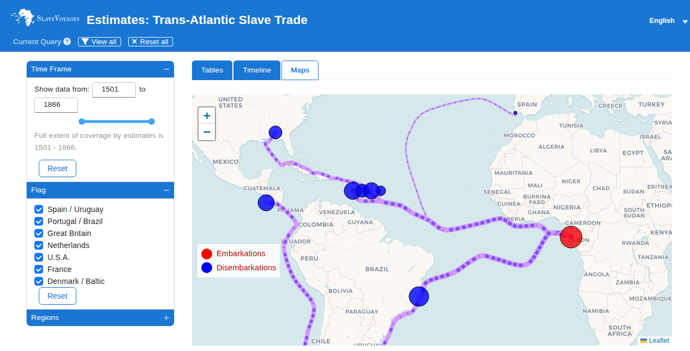

Aula 12
Aula 12Atividade prática: SlaveVoyages
Aula 12Explorando o tráfico atlântico de escravizados

Aula 12O que é o SlaveVoyages?
- Base de dados digital sobre o tráfico transatlântico de africanos escravizados
- Compila estimativas baseadas em registros documentais de viagens (1501–1866)
- Permite pesquisar, filtrar, visualizar e baixar dados sobre o tráfico
- Três modos de visualização: Tabelas, Linha do tempo e Mapas interativos
- Ferramenta fundamental para a historiografia da escravidão atlântica
Aula 12Parâmetros de busca disponíveis
- Time Frame: período (1501–1866), com slider e campos numéricos
- Flag (Portadora nacional): Spain/Uruguay, Portugal/Brazil, Great Britain, Netherlands, U.S.A., France, Denmark/Baltic
- Regions → Embarkation Regions (regiões de embarque na África)
- Regions → Disembarkation Regions (regiões de desembarque nas Américas): subdivididas por império
Aula 12Busca 1: Volume do tráfico para o Caribe britânico
Objetivo: visualizar a escala da escravidão nas ilhas produtoras de açúcar
Aula 12Busca 1: Volume do tráfico para o Caribe britânico
- Time Frame: 1601–1800
- Flag: deixar todos selecionados
- Regions → desmarcar todos os Disembarkation Regions, exceto: Jamaica, Barbados, Antigua, St. Kitts, Grenada, Dominica, Other British Caribbean
- Mudar para a tab Timeline → observar o pico de desembarques
- Mudar para a tab Maps → visualizar os fluxos
Aula 12Questão para discussão
Pergunta: Em que período o tráfico para o Caribe britânico atingiu seu pico? Como isso se relaciona com a transição do tabaco para o açúcar?
Aula 12Busca 2: Comparação Caribe britânico vs. Saint-Domingue
Objetivo: comparar o volume de cativos nas duas maiores potências açúcarneiras
Aula 12Busca 2: Comparação Caribe britânico vs. Saint-Domingue
- Time Frame: 1701–1800
- Flag: Great Britain + France (desmarcar os demais)
- Disembarkation Regions: marcar Jamaica, Barbados (britânicas) e Saint-Domingue, Martinique, Guadeloupe (francesas)
- Tab Tables → Rows: “50-year periods”; Columns: “Disembarkation regions”; Cells: “Only embarked”
- Observar os números absolutos por ilha
Aula 12Questão para discussão
Pergunta: Qual ilha recebeu mais cativos no século XVIII? Como isso se reflete na produção açucareira descrita por Klein & Vision III?
Aula 12Busca 3: Origens africanas — de onde vinham os escravizados?
Objetivo: mapear as regiões de embarque na África que abasteceram o Caribe
Aula 12Busca 3: Origens africanas — de onde vinham os escravizados?
- Time Frame: 1651–1800
- Flag: manter todos
- Disembarkation Regions: marcar apenas as ilhas do Caribe (Jamaica, Barbados, Saint-Domingue, Martinique, Guadeloupe, Dutch Caribbean)
- Tab Tables → Rows: “50-year periods”; Columns: “Embarkation regions”
- Observar quais regiões africanas predominam em cada período
Aula 12Questão para discussão
Pergunta: Qual região africana forneceu mais cativos para o Caribe? Houve mudança nas origens ao longo do século XVIII?
Aula 12Busca 4: Holandeses — império de contrabando
Objetivo: evidenciar o papel holandês no tráfico e seu deslocamento para as Guianas
Aula 12Busca 4: Holandeses — império de contrabando
- Time Frame: 1601–1800
- Flag: marcar apenas Netherlands
- Disembarkation Regions: manter todos
- Tab Tables → Rows: “50-year periods”; Columns: “Disembarkation regions”
- Tab Timeline → observar a curva ao longo do tempo
Aula 12Questão para discussão
Pergunta: Para onde os holandeses direcionaram seus cativos após perderem o controle das ilhas? Como isso dialoga com a tese de Klein & Vision III sobre o papel holandês?
Aula 12Busca 5: O minúsculo tráfico para a América do Norte
Objetivo: contrastar a escala do Caribe com a América do Norte britânica
Aula 12Busca 5: O minúsculo tráfico para a América do Norte
- Time Frame: 1501–1866
- Disembarkation Regions: desmarcar tudo, marcar apenas Chesapeake, Carolinas/Georgia, Northern U.S., Gulf states, U.S.A. unspecified
- Tab Timeline → comparar visualmente com a Busca 1
Aula 12Questão para discussão
Pergunta: Menos de 4% dos cativos desembarcaram na América do Norte. Como essa proporção ajuda a entender por que as colônias norte-americanas desenvolveram dinâmicas sociais tão diferentes das caribenhas?
Aula 12Como exportar e discutir os dados
- Download Table: botão na tab Tables → exporta CSV para análise
- Download Timeline Data: botão na tab Timeline → dados anuais
- Screenshot dos mapas: use para documentar suas observações em sala